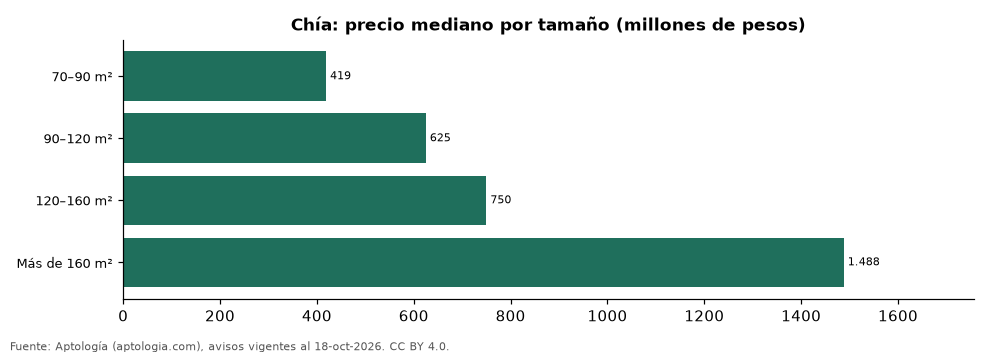

Casas en venta en Chía según tamaño: precio y m² de cada grupo (octubre 2026)
Estudio con datos abiertos (CC BY 4.0). Versión original: https://www.aptologia.com/estudios/casas-en-venta-por-tamano-chia-2026 · DOI: 10.5281/zenodo.23521466
En Chía, una casa en venta del grupo «70–90 m²» se pide en 419 millones de pesos en la mediana y una del grupo «Más de 160 m²» en 1.488 millones de pesos (+255,1 %). Por metro cuadrado, el más barato es «Más de 160 m²» (4,82 millones de pesos/m²) y el más caro «90–120 m²» (5,79 millones de pesos/m²).
Resumen: analizamos 4.048 casas en venta en Chía con tamaño declarado.
Actualizado: 18 de octubre de 2026 (datos del 18 de octubre de 2026) · Próxima actualización: mensual.

Resumen
| Indicador | Valor |
|---|---|
| 70–90 m² | 419 millones de pesos |
| 90–120 m² | 625 millones de pesos |
| 120–160 m² | 750 millones de pesos |
| Más de 160 m² | 1.488 millones de pesos |
| Avisos | 4.048 |
Precio y m² por tamaño
| Tamaño | Precio (mediana) | Rango típico (P25–P75) | Por m² (mediana) | Área mediana (m²) | Avisos |
|---|---|---|---|---|---|
| 70–90 m² | 419 millones de pesos | 369 millones de pesos – 450 millones de pesos | 5,07 millones de pesos | 80 | 83 |
| 90–120 m² | 625 millones de pesos | 530 millones de pesos – 750 millones de pesos | 5,79 millones de pesos | 111 | 374 |
| 120–160 m² | 750 millones de pesos | 668 millones de pesos – 882 millones de pesos | 5,43 millones de pesos | 142 | 680 |
| Más de 160 m² | 1.488 millones de pesos | 950 millones de pesos – 2.300 millones de pesos | 4,82 millones de pesos | 290 | 2.911 |
Medianas del precio pedido; grupos con menos de 30 avisos se omiten.
Preguntas frecuentes
¿Cuánto cuesta comprar una casa de qué tamaño en Chía? 70–90 m²: 419 millones de pesos; 90–120 m²: 625 millones de pesos; 120–160 m²: 750 millones de pesos; Más de 160 m²: 1.488 millones de pesos (medianas de octubre de 2026).
¿Qué grupo sale más barato por m²? Por metro cuadrado, el más barato es «Más de 160 m²» (4,82 millones de pesos/m²) y el más caro «90–120 m²» (5,79 millones de pesos/m²).
Metodología
- Fuente: exportes nocturnos de la base de datos de Aptología (aptologia.com) del 18 de octubre de 2026: avisos vigentes de vivienda en portales inmobiliarios de 13 países, recogidos por Aptología y vistos en línea entre el 11 y el 18 de octubre de 2026. Corte: 18 de octubre de 2026.
- Depuración: se eliminan duplicados exactos (misma ciudad, zona, tipo, precio, moneda, área, habitaciones y baños) y los precios fuera del percentil 1–99 de cada país, operación, moneda y tipo; el precio por m² usa solo avisos con área declarada entre 12 y 2.000 m² y también se recorta al P1–P99.
- Qué se mide: precios pedidos (publicados), no precios de cierre. En arriendo, el canon mensual sin administración, gastos comunes ni condominio.
- Muestra mínima: cada cifra publicada se apoya en al menos 30 avisos; las celdas con menos se omiten.
- Colombia: Precios en pesos colombianos, sin conversión de moneda.
- Cordura: solo se publica si la mediana crece con tamaño.
- Limitaciones: la cobertura depende de los portales que recorre Aptología en cada país y es mayor en las ciudades grandes y en los segmentos medio-alto y alto; el área es la que declara el aviso, sin verificar; los nombres de zona vienen de los portales.
- Privacidad: solo se publican agregados; no se publica ningún dato personal, enlace a avisos ni nombre de anunciante.
- Datos abiertos: datos.csv, licencia CC BY 4.0.
Cómo citar
Pinzón Pineda, D. M. (2026). Casas en venta en Chía según tamaño: precio y m² de cada grupo (octubre 2026). Aptología (aptologia.com). https://github.com/elbroker/aptologia-datos/tree/main/estudios/casas-en-venta-por-tamano-chia-2026. Datos: datos.csv, licencia CC BY 4.0.